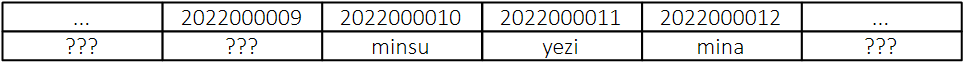
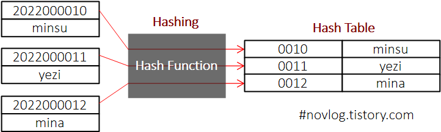
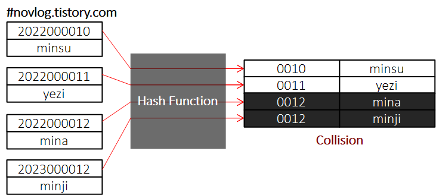
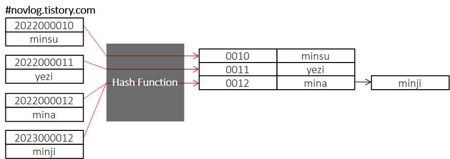
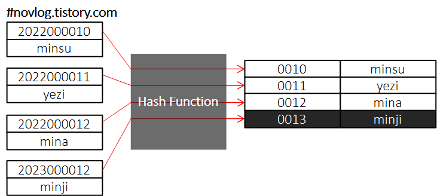

* 다음 포스팅은 Hash 자료구조의 개념에 대한 내용을 포함하고 있습니다.
실질적인 구현 및 C++ STL map의 사용 방법에 대한 정보를 원하시는 분은 다음 포스팅을 참고해 주세요.
* 개인적인 공부 내용을 기록하는 용도로 작성한 글 이기에 잘못된 내용을 포함하고 있을 수 있으며,
지속적으로 수정 및 보완 해 나갈 예정입니다. 언제나 지적은 환영합니다!
Related
→ Hash 자료구조 구현 with C/C++ (미완성)
_Contents
#1 About Hash DataStructure
- Hashing & Hash Function
#2 Collision
- Chaining : 체이닝
- Open Addressing : 개방 주소법
#3 Hash 장단점
#1 About Hash DataStructure
Hash는 Key - Value 쌍으로 데이터를 저장하는 자료구조 입니다.
이 때 데이터를 그냥 저장시키는 것이 아닌 해시 함수 (Hash Function) 라는 것을 사용해 Key 값을 Hash 값으로 바꾸어 준 뒤, 이 바꾼 Hash 값을 주소로 삼아 데이터를 Hash 값과 함께 저장합니다.
여기서 왜 굳이 번거롭게 Hash Function 까지 사용해 가며 키 값을 변환하여 저장해야 하는지 의문이 생길 수 있습니다.
학번과 학생의 이름을 저장한 뒤, 학번을 이용해 학생을 검색하는 프로그램을 제작하는 의뢰를 받았다고 가정해 봅시다.
학번은 총 10자리로 구성되어 있으며 학번과 학생의 데이터베이스는 다음과 같습니다.
| 학번 | 이름 |
| 2022000010 | minsu |
| 2022000011 | yezi |
| 2022000012 | mina |
그러면 이제 어떤 자료구조를 이용해 데이터베이스에 담긴 정보를 저장해야 할까요?
배열을 사용해 저장해 보도록 합시다. 가장 쉽게 떠오를 수 있는 방법인데, 배열에 학번이 될 수 있는 모든 경우의 메모리를 저장한 뒤 학생의 정보를 저장하는 것 입니다.

하지만 학번의 모든 가짓수를 배열로 저장하려면 학번이 총 10자리 이기에 10¹⁰ 가지 즉, 10000000000 10GB의 메모리가 필요하게 됩니다. 배열을 사용하는 것은 사실상 불가능합니다.
- Hashing & Hash Function
이번에는 Hash 자료구조를 이용해 봅시다. 앞에서 설명했듯이 Hash Function을 이용할 것 입니다. Hash Function 이란 임의 길이의 데이터를 고정된 길이의 Hash로 변경해주는 역할을 수행하는 함수입니다.
다음 예제에서는 Hash Function 이 10자리의 학번 중 가장 뒤에 끝 4자리만 떼와서 새로운 테이블에 저장합니다.
이러한 과정을 Hashing 이라고 하며, Hash Function 을 사용해 새롭게 제작된 테이블은 Hash Table 이라고 부릅니다.

#2 Collision
언뜻보면 완벽할 것 같은 Hash도 만능은 아닙니다.
예를들어 23년에 12번째로 minji 라는 학생이 새로 대학에 입학했다고 가정해 봅시다. 앞에서 수행했던 것과 같이 학번 정보를 Hash Function에 넣었더니, 해시 값으로 "0012"가 출력되어 Hash Table에 저장되었습니다.
하지만 0012는 이미 존재하는 key값입니다.

이처럼 Collision(충돌)이란 서로 다른 키가 같은 해시 값을 가지게 될 경우 발생하는 문제점입니다.
이러한 충돌을 회피하기 위한 방안으로 크게 Chaining 기법과 Open Addressing 기법으로 나뉩니다.
- Chaining : 체이닝
Chaining은 Hash Table의 각 인덱스에 연결 리스트 혹은 벡터와 같은 자료 구조를 하나씩 두어 충돌을 회피하는 기법입니다.
실제로 C++ STL 의 map 컨테이너는 체이닝 기법을 토대로 구현되어 있습니다.
만약 위 상황과 같이 해시 값 충돌이 발생해도 그냥 연결 리스트로 연결해 주기만 하면 됩니다.

그러나 극단적으로 모든 키의 해시 값이 같은 상황이 발생했을 때 O(N)의 탐색 시간이 소요됩니다.
- Open Addressing : 개방 주소법
Open Addressing 은 인덱스에 바로 key - value 쌍을 작성하는 기법입니다.
만약 해시 값 충돌이 발생하면 비어있는 다음 블록을 찾아 저장합니다.

이 때 비어있는 블록을 찾아가는 방법 또한 여러가지가 있는데, 이건 추후에 다른 포스팅에서 정리 하도록 하겠습니다.
#3 Hash 장단점
장점 : (Hash Function이 잘 구현되어 있다는 가정 하에) Insertion(추가), Deletcion(삭제), Search(검색) 연산의 시간복잡도가 O(1)으로 매우 효율적입니다.
Key를 이용해 빠르게 value에 조작할 수 있습니다.
단점 : 데이터가 저장되기 이전에 미리 저장 공간을 확보해 놓아야 하기에 메모리 효율이 떨어집니다.
Hash Function 의존도가 높습니다. 효율이 떨어지는 Hash Function을 채택할 경우 Hash Table의 시간 복잡도가 최대 O(원소의 개수) 까지 늘어날 가능성이 있습니다.
이상으로 Hash 자료구조의 원리와 구조에 대해 간략하게 정리해 보았습니다.
도움이 되셨다면 공감 부탁드립니다!